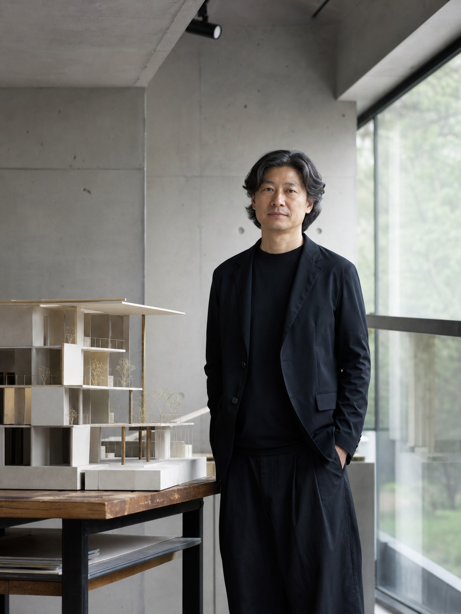

Studio
무게가 일하는 방식
우리는 형태를 정하기 전에 먼저 묻습니다. 이 공간의 무게중심은 어디에 있어야 하는가.
01
중심을 먼저 찾는다
평면을 그리기 전, 땅과 프로그램의 무게중심을 먼저 정합니다. 빛이 고이는 곳, 동선이 멈추는 곳. 그 한 점이 정해지면 나머지는 따라옵니다.
02
덜어내며 분명해진다
더하는 설계보다 덜어내는 설계를 신뢰합니다. 재료와 디테일을 줄일수록 구조와 빛이 선명해집니다. 비움은 우리의 가장 중요한 재료입니다.
03
도면에서 끝까지 다듬는다
아이디어는 빠르지만 균형은 느립니다. 우리는 준공까지 도면을 손에서 놓지 않습니다. 현장의 1mm가 공간의 무게를 바꾼다고 믿습니다.

Principal Architect
한무성
서울시립대 건축학과를 졸업하고 두 곳의 설계사무소를 거쳐 2018년 무게를 열었습니다. “집은 무게를 어떻게 다루느냐의 문제”라는 문장을 오래 붙들고 작업합니다. 대한건축사협회 정회원.
Process
상담부터 준공까지
| 01 | 상담 | 대지 여건과 예산, 생활 방식을 듣습니다. 가능성과 한계를 솔직하게 공유하는 자리입니다. |
| 02 | 현장 분석 | 대지를 직접 측량하고 빛·바람·조망·법규를 검토해 무게중심의 후보를 잡습니다. |
| 03 | 설계 | 계획설계부터 실시설계까지. 평면·단면·재료를 도면 위에서 반복해 다듬습니다. |
| 04 | 시공 감리 | 시공사와 협업하며 현장을 상주 감리합니다. 도면과 현실의 간격을 매주 좁힙니다. |
| 05 | 준공 | 사용 승인과 인도 후에도 6개월간 하자와 사용성을 함께 점검합니다. |
Awards
수상 & 선정
- 2024겹집 — 한국건축가협회상 본상KIA Award
- 2023층층 — 서울시 건축상 우수상Seoul Arch.
- 2023흰벽 — 김수근건축상 프리뷰상Preview
- 2022두께 — 젊은건축가상 선정Young Arch.
- 2021마당집 — 대한민국목조건축대전 특선Wood Arch.
- 2020빈 — 공간문화대상 선정Space Culture